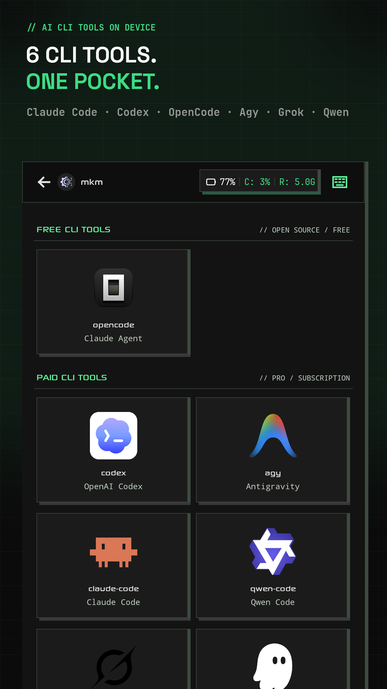
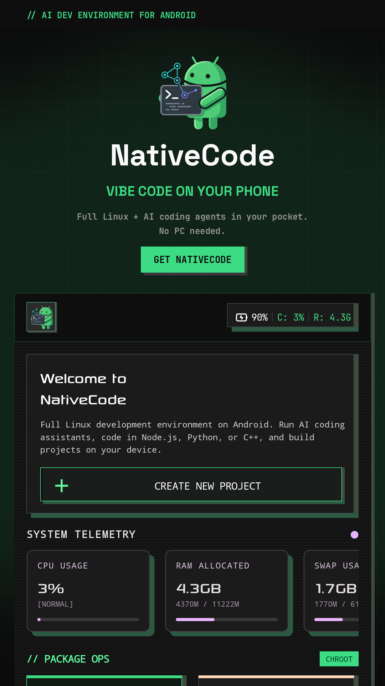
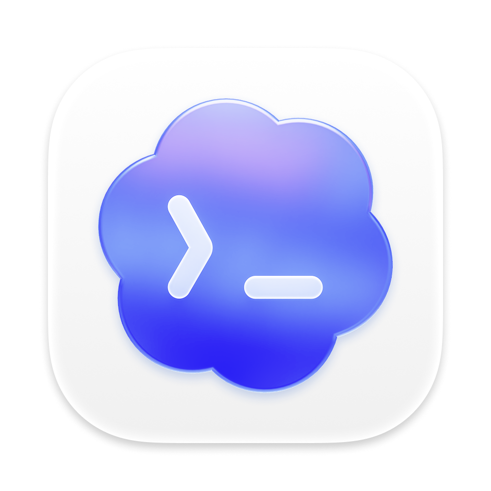
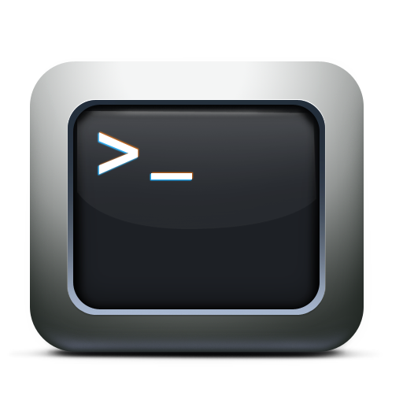
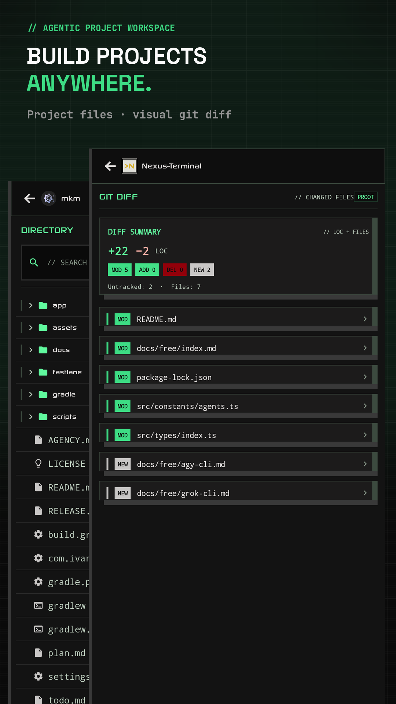
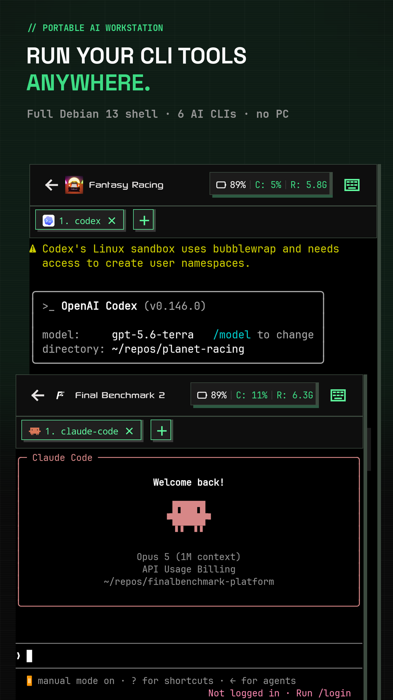
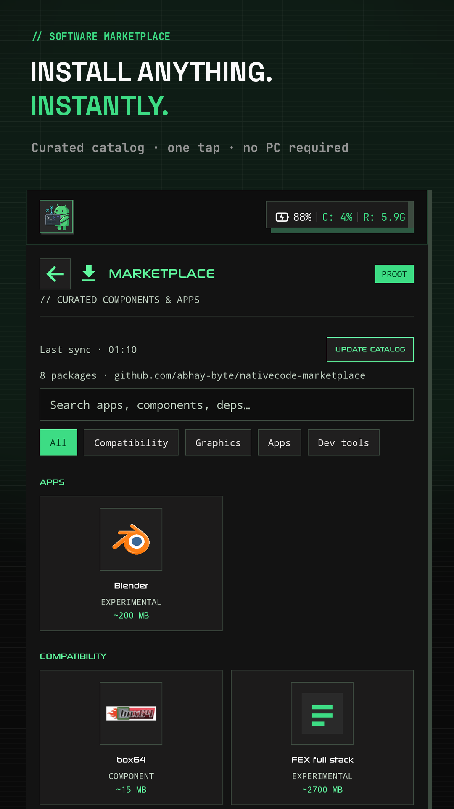
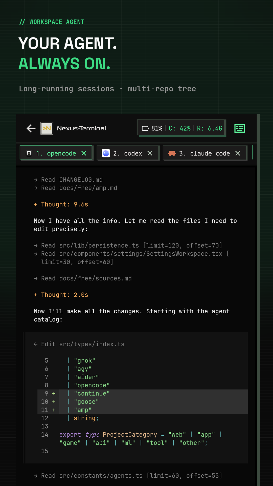
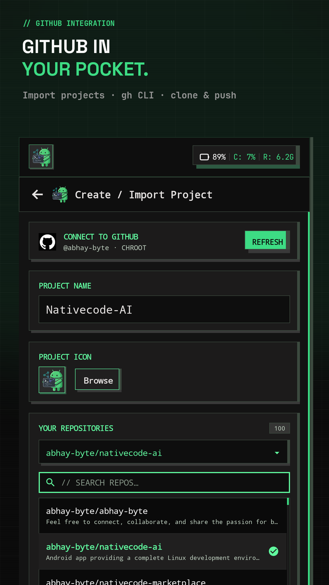
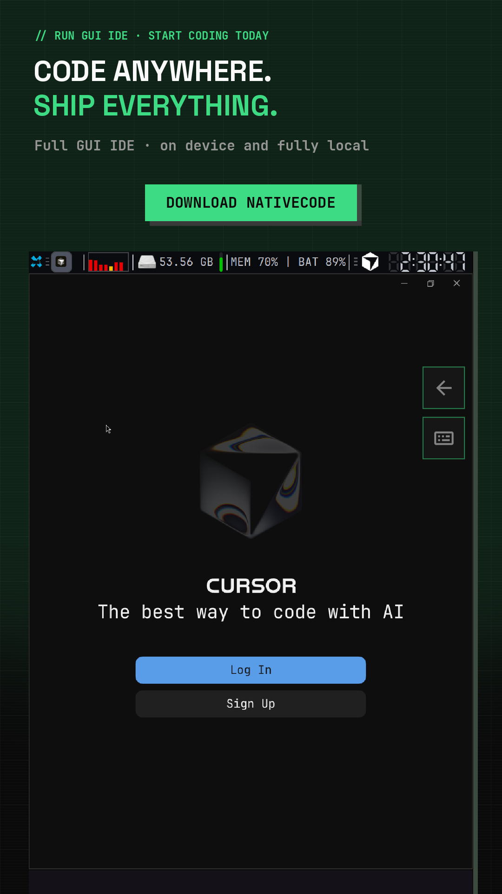

CATALOG · 01 / 07
AI agents
Every coding agent in one catalog — free and pro tools side by side.
- ▸OpenCode free agent out of the box
- ▸Codex, Claude Code, Qwen, Grok & Kiro via catalog
- ▸Guided install + credential provisioning
$ workspace --for-ai-agents
Full Linux + AI coding agents in your pocket — prebaked Alpaquita rootfs, no PC needed.
READY
Prebaked rootfs
7
AI CLI agents
0
PC needed



$ nativecode --features
One install, zero PC. Agents, shell, desktop, git and runtimes — provisioned on-device.
12 MODULES · NO PC
7 AGENTS
Claude Code, Codex, OpenCode, Agy, Grok, Qwen and Kiro — install and auth from one catalog.
TELEMETRY
Live CPU / RAM / swap telemetry cards per session. Watch your agents work.
SHELL
Real terminal with tabs, extra-keys row and PRoot Debian under it. Total control, on-device.
ROOTFS
Lightweight prebaked rootfs with full package management. Instant container, no long bootstrap.
ISOLATION
User-space PRoot needs no root. Rooted devices unlock kernel-space Chroot execution.
GUI
Full graphical desktop via the bundled Termux-X11 server with VirGL GPU acceleration.
PROJECTS
Create and manage on-device projects — Node.js, Python, C++ — with a multi-repo tree.
GIT
Real-time status, visual diff inspector, branch switching and GitHub CLI auth.
CATALOG
Browse and install CLI tools, runtimes and shells from the in-app software catalog.
DEV
Node.js 26 LTS, Python 3.12, GCC and standard package managers, ready on first launch.
AUTH
Guided install and safe on-device storage for AI vendor keys and GitHub tokens.
WIZARD
Device check, isolation picker and live-provisioned install plan with console output.
$ nativecode --tour
Swipe through the real app — catalog, shell, telemetry and desktop.
01 / 07

CATALOG · 01 / 07
Every coding agent in one catalog — free and pro tools side by side.

PROJECTS · 02 / 07
Create and manage on-device coding projects in seconds.

SHELL · 03 / 07
Debian shell running side by side with your AI agents.

CATALOG · 04 / 07
One-tap runtimes, shells and utilities from the software catalog.

TELEMETRY · 05 / 07
Live CPU, RAM and swap cards while your agents work.

GUI · 06 / 07
A full XFCE4 desktop with GPU acceleration — on your phone.

GET IT · 07 / 07
Vibe code on your phone — no PC needed.
$ nativecode --install
~10 MIN · GUIDED
01
Grab the release APK from GitHub. Android 8.0+, 10 GB free storage.
02
Onboarding checks storage, RAM and swap, then shows you the install plan.
03
PRoot for no-root devices (recommended), Chroot for rooted power users.
04
Provision Claude, Codex or OpenCode and start shipping from your pocket.
$ nativecode --check
Real Linux needs real headroom. The wizard verifies this before installing.
› OS
Android 8.0+ (SDK 26+), built against SDK 36
› Storage
10 GB free internal storage (hard requirement)
› RAM
7 GB+ recommended, swap checked at setup
› SoC
Snapdragon 8 Gen 2 / Dimensity 9200 / Tensor G3 / Exynos 2200 or newer recommended
› Root
Not required (PRoot) · optional Chroot mode for rooted devices
› Display
XFCE4 desktop via bundled Termux-X11 + VirGL
10 GB
STORAGE
7 GB+
RAM
8.0+
ANDROID
NO ROOT
NEEDED
$ prebaked rootfs → skip
long bootstrap, ship faster.
$ nativecode --help
Root, storage, agents, isolation — the six things everyone asks before installing.
No. PRoot mode runs fully unprivileged. Chroot mode is an optional extra for rooted devices with kernel-space execution.
The Debian container, desktop environment, runtimes and AI toolchains are real software — the wizard verifies space before installing anything.
Claude Code, Codex, OpenCode, Agy, Grok, Qwen and Kiro, with guided install and credential management inside the app.
PRoot works everywhere and is recommended. Chroot is faster and deeper but needs a rooted device.
From the in-app software marketplace plus anything apt offers inside the Debian container.
Releases ship as APKs on GitHub. Follow the repo for store announcements.
Releases ship as signed APKs on GitHub. Star the repo to catch the next drop.
adb install -r app-release.apk